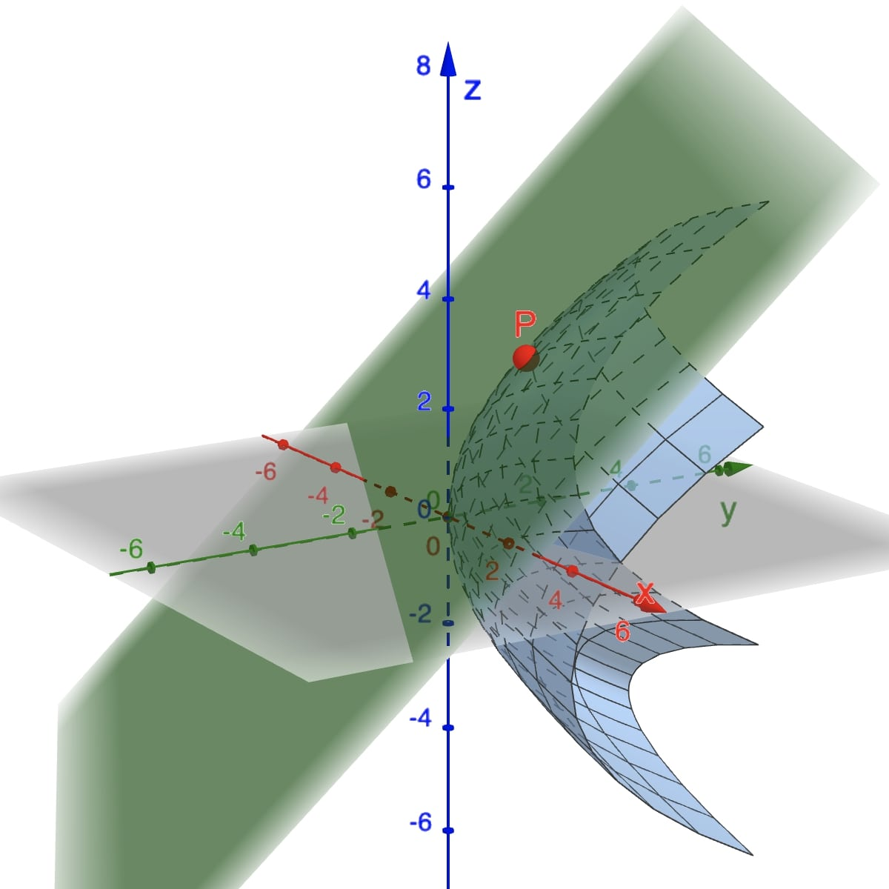

The Path Integral
Suppose we have a scalar function $f: \R^3 \to \R,$ so that $f$ sends points in $\R^3$ to real numbers. It will be useful to define the integral of such functions $f$ along a path \[ \c : [a,b]\to \R^3, \text{ where } \c(t) = \left(x(t), y(t), z(t) \right). \]
Sometimes $\int_{\c}f\,ds$ is denoted as \[ \int_{\c}f(x,y,z)\,ds \] or \[ \int_{a}^{b} f\big(\c(t)\big)\norm{\c'(t)}\, dt. \] If $\c$ is only piecewise $C^1$, or $f\big(\c(t)\big)$ is piecewise continuous, we define $\int_{\c}f\,ds$ by breaking $[a,b]$ into pieces over which $f\big(\c(t)\big)\norm{\c'(t)}$ is continuous, and then we sum the integrals over the pieces.
To compute $\int_{\c}f(x,y,z)\,ds,$ first we need $\norm{\c'(t)}:$
Next we substitute for $x,y,z$ in terms of $t$ to obtain \begin{eqnarray*} f(x,y,z) &=& x^2+y^2+z^2\\ &=& \sqrt{\sin^2 t + \cos^2 t + t^2}\\ &=& 1+ t^2. \end{eqnarray*} along the path $\c.$ Thus we obtain \begin{eqnarray*} \int_{\c}f(x,y,z)\,ds &=& \int_0^{2\pi} \left(1+ t^2\right)\sqrt{2}\,dt\\ &=& \sqrt{2} \left[\frac{t^3}{3}+ t\right]_0^{2\pi}\\ &=& \frac{2\sqrt{2}\pi}{3} \left(4\pi^2 + 3\right). \end{eqnarray*}
The definition of path integral can be understood more intuitively by approximating the path integral using sums that resemble Riemann sums in calculus. For simplicity, let $\c$ be of $C^1$ on $I=[a,b].$ Subdivide the interval $I=[a,b]$ by means of a partition \[ a=t_0 \lt t_1 \lt \ldots \lt t_N=b. \] Now $\c$ is divided into smaller paths $\c_i$ defined on $\left[t_i,t_{i+1}\right]$ for $0\le i \le N-1.$
We consider now the arc length $\Delta s_i$ of $\c_i$ defined as \[ \Delta s_i = \int_{t_i}^{t_{i+1}}\norm{\c'(t)}\, dt. \]
If $N$ is large, the arc length $\Delta s_i$ is small and $f(x,y,z)$ is approximately constant for points on $\c_i.$ Now we consider the sums \[ S_N = \sum_{i=0}^{N-1}f\left(x_i, y_i, z_i\right)\Delta s_i, \] where $\left(x_i, y_i, z_i\right)= \c(t)$ for some $t_i\in \left[t_i,t_{i+1}\right].$ By the mean-value theorem we know that $\Delta s_i=\norm{\c'(t_i^{*})}\Delta t_i,$ where $t_i^*\in \left[t_i,t_{i+1}\right]$ and $\Delta t_i = t_{i+1}-t_i.$ Thus, we have
Suppose that the image of $\c$ represents a wire. If $f(x,y,z)$ represents the mass density at $(x,y,z),$ then the integral of $f$ will be the total mass of the wire. On the other hand, if $f(x,y,z)$ indicates temperature, then the integral of $f$ determines the average temperature along the wire. Also, if $f=1,$ we recover the definition of the arc length of $\c.$
The Path Integral for Planar Curves
A particular case of the path integral happens when the path $\c$ describes a plane curve. Assume that all points $\c(t)$ lie in the $xy$ plane and $f$ is a real-valued function of two variables. The path integral of $f$ along $\c$ is
If $f(x,y)\geq 0,$ this integral has a geometric interpretation as the
The following applet provides a numerical value for path integrals. By default it is set to compute the path integral of planar curves. For curves in the $\R^3$ just unselect the box Planar curve.
Line Integrals
Work done by force fields
Recall that work done by a constant force $\F$ in moving an object from a point $A$ to another point $B$ in space is $W = \F \pd \mathbf D$, where $\mathbf D = \overrightarrow{AB}$ is the displacement vector.
Now consider a force field $\F(x,y)$ and a piecewiese continuous smooth curve $C.$ We wish to compute the work done by this force in moving a particle along this smooth curve $C.$

We divide $C$ into subarcs $P_{i-1}$-$P_i$ with lengths $\Delta s_i$ by dividing the parameter interval $[a, b]$ into subintervals of equal width. Choose a point $P_i^*$ on the $i$th subarc corresponding to the parameter value $t_i^*.$ If $\Delta s_i$ is small, then as the particle moves from $P_{i-1}$ to $P_i$ along the curve, it proceeds approximately in the direction of $\T\left(t_i^*\right),$ the unit tangent vector at $P_i^*.$

Thus the work done by the force $\F$ in moving the particle from $P_{i-1}$ to $P_i$ is approximately
and the total work done in moving the particle along $C$ is approximately \[ \sum_{i=1}^n \left[\F\left(x_i^*,y_i^*\right) \pd \T\left(t_i^*\right) \right]\Delta s_i. \]
Intuitively, we see that these approximations have to become better as $n\to \infty$, that is, $\Delta s_i\to 0.$
Therefore we define the work $W$ done
by the force field $\F$ as the
limit of the Riemann sums in $\sum_{i=1}^n \left[\F\left(x_i^*,y_i^*\right) \pd \T\left(t_i^*\right)
\right]\Delta s_i.$
That is
\[
W = \int_{\c}\F\pd \T~ds
\]
This equation says that

If the smooth curve $C$ is given by the parametrization $\c(t) = \big( x(t), y(t)\big),$ then $\T(t) = \c'(t)/\norm{\c'(t)}.$ So we can write
This integral is often abbreviated as $\int_{\c}\F\pd d\s.$ The previous discussion of work in two dimensions motivates the following definition.
Similarly to the case with scalar functions, we can also define $ \int_{\c} \F\pd d\s $ when $ \F\left(\c(t)\right)\pd \c'(t)$ is only piecewise continuous.
Another common way to write $\int_{\c} \F \pd d\s$ is \[ \int_{\c}F_1~dx+ F_2~dy + F_3~dz, \] where $F_1,$ $F_2$ and $F_3$ are the components of the vector field $\F.$ The expression $F_1~dx+ F_2~dy + F_3~dz$ is called a differential form. The integral of a differential form along a path $\c(t) = \big( x(t), y(t), z(t)\big )$ is defined as
In this case we consider $d\s$ as the differential form $d\s = dx~\i+dy~\j+dz~\k.$ This is why the differential form $F_1~dx+ F_2~dy + F_3~dz$ can be written as the dot product $\F\pd d\s.$
Now, to compute a line integral in any particular case, we can use the original definition, integrate the tangencial component of $\F$ along $\c,$ or use the differential form, whichever is easier or more appropiate. Just keep in mind that in the definition $\F\big(\c(t)\big)$ is just an abbreviation for the vector field $\F\big(x(y),y(t),z(t)\big),$ so we evaluate $\F\big(\c(t)\big)$ by simply putting $x = x(t),$ $y=y(t),$ and $z=z(t)$ in the expression $\F(x,y,z).$
Therefore
Since $\F\left(\c (\theta)\right)\pd \c'(\theta)= 0,$ the force field $\F$ is normal to the circle at every point on the circle, which means that $F$ will not do any work on a particle moving along the circle.
We can easily verify this by computing:
If we consider the path $\c(t) = \cos^3 t~\i + \sin^3 t~\j +t~\k$ for $t\in[0, 7\pi/2],$ and the vector field $\F = \sin z~\i + \cos z~\j - (xy)^3~\k,$ then the work done by the field is $-1/2$ (Compute the integral to confirm this).
Show extra work!
For $\c(t) = \cos^3 t~\i + \sin^3 t~\j +t~\k,$ we have that \[ \c'(t) = -3\cos^2 t\sin t~\i + 3\sin^2 t \cos t~\j +\k, \] and for the vector field $\F = \sin z~\i + \cos z~\j - (xy)^3~\k,$ \[ F\big(\c(t)\big) = \sin t~\i + \cos t~\j - \cos t \sin t~\k. \] Therefore
This means that the field impedes movement along the path.
We have introduced the definition of path integrals (integrals of scalar functions) and line integrals (integrals of vector functions) over parametrized curves. Because these integrals are independent of the parametrization (except possibly for the sign), it is natural to express the theory considering curves. But first we need a couple of definitions.
A simple curve $C$ is the image of a piecewise $C^1$ map $\c: I \to \R^3$ that is one-to-one on an interval $I.$ The map $\c$ is called a parametrization of $C.$ Thus, a simple curve is one that does not intersect itself. If $I = [a, b],$ we call $\c(a)$ and $\c(b)$ endpoints of the curve.
Every simple curve $C$ has two orientations or directions associated with it. If $\c(a)$ and $\c(b)$ are the endpoints of the curve, then we can consider $C$ as directed either from $\c(a)$ to $\c(b)$ or from $\c(b)$ to $\c(a).$ The simple curve $C$ together with a sense of direction is called an oriented simple curve or directed simple curve.
A simple closed curve is the image of a piecewise $C^1$ map $\c:[a,b]\to \R^3$ that is one-to-one on $[a,b)$ and satisfies $\c(a) = \c(b).$ If $\c$ satisfies the condition $\c(a) = \c(b),$ but is not necessarily one-to-one on $[a, b),$ we call its image a closed curve.
Simple closed curves have two orientations, corresponding to the two possible directions of motion along the curve.
Since $C$ is either an oriented simple curve or an oriented simple closed curve, line integrals along it can be defined unambiguously:
If $-C$ is the same curve as $C,$ but with opposite orientation, then \[ \int_C \F\pd d\s = - \int_{-C} \F \pd d\s. \] Now, if $C$ is an oriented $C$ curve that is made up of several oriented component curves $C_i$ for $i=1,2,\ldots,k,$ then we write $C=C_1+ C_2+\cdots + C_k.$ Thus
The previous formula provides a convenient way to evaluate $\int_C \F \pd d\s,$ since sometimes it is easier to parametrize the componentes $C_i$ individually thant to parametrize $C$ as a whole.
The Notation $d\r$
It is also common to write $\int_{C} \F \pd d\s$ using the notation \[ \int_C \F \pd d\r. \] The main reason is that we can think of describing a $C^1$ path $\c$ in terms of a moving position vector based at the origin and ending at the point $\c(t)$ at time $t.$ Postion vectors are ofter denoted by \[ \r = x~\j+y~\j+z~\k, \] and so the curve $C$ is described using the notation \[ \r(t) = x(t)~\j+y(t)~\j+z(t)~\k \] instead of $\c(t).$ By definition, the line integral is then given by \[ \int_a^b \F \big(\r(t)\big)\pd \frac{d\r}{dt}dt. \] By canceling the $dt$'s, and using the parametrization independence to replace the limits of integration with the geometric curve $C,$ we obtain the notation $\int_C \F \pd d\r.$
Show me a hint!
Use the parametrization $\c:[0,4]\to \R^2$ defined as \[ \c(t) = \left\{ \begin{array}{ll} (t, 0), & t\in [0,1],\\ (1, t-1), & t\in [1,2],\\ (3-t, 1), & t\in [2,3],\\ (0, 4-t), & t\in [3,4],\\ \end{array} \right. \] You should get $\frac{1}{2}.$ Try to evaluate the integral considering $C$ as $C_1+C_2+C_3+C_4,$ where $C_i$ are oriented curves. It should be easier to define each $C_i.$
Line Integrals of Gradient Fields
Recall that a vector field $\F$ is a gradient vector field if $\F= \nabla f$ for some real-valued function $f.$ Thus \[ \F = \frac{\partial f}{\partial x}~\i+\frac{\partial f}{\partial y}~\j+\frac{\partial f}{\partial z}~\k. \]
From calculus we also learned that if $f$ and $F$ are single-valued continuous functions defined on a closed interval $[a,b],$ and also $F$ is differentiable on $(a,b),$ such that $F'=f;$ then \[ \int_a^bf(x)~dx = F(b)-F(a), \] by the fundamenal theorem of calculus. Thus the value of the integral of $f$ depends only on the value of $F$ at the end points of the interval $[a,b].$
If a vector field $\F$ is the derivative of a function $f$, is it possible to determine the value of $\int_{\c}\F\pd d\s$ by the value of $f$ at the endpoints $\c(a)$ and $\c(b)?$ The answer is contained in the following gereralization of the fundamental theorem of calculus.
Hence
Parametrization of surfaces
Another way of representing a surface $S$ in $\R^3$ is by a parametrization. This is where the coordinate variables are functions of two parameters $u$ and $v$: $$ x=x(u,v),\ \ y=y(u,v),\ \ z=z(u,v) $$ and the vector $$ \r(u,v) = x(u,v)~\i+y(u,v)~\j+z(u,v)~\k $$ traces out the surface as $u,v$ vary over some region $D$ in the "$uv$-plane". So for every point $(u,v)$ in $D,$ there corresponds a point on the surface $S$.
The following diagram shows the point $P$ on the surface $S$ which corresponds to the point $(u,v)$ in the region $D$ in the $uv$-plane. As $(u,v)$ moves around all points in $D,$ the point $P$ moves around in $S,$ tracing out the entire surface.

Note that a surface defined explicitly by $z=f(x,y)$ is equivalent to a parametrization $$ \r(x,y) = x~\i+y~\j+f(x,y)~\k, $$ where we treat the coordinate variables $x$ and $y$ as the parameters. Note that we have not specified any bounds on the variables. Often the challenge is to not only find suitable functions for a parametrization, but for a finite surface to determine bounds on the parameters.
What's the point to define parametrizations of surfaces?
A good motivation to use parametrizations is that sometimes surfaces cannot be the graphs of functions defined as \[ z= f(x,y). \] For example, many surfaces can be defined as level surfaces of functions. If we consider $S$ a set of points $(x,y,z)$ satisfying the equation $x^3+z-z^3=0,$ we obtain a surface resembling a sheet with two folds extending infinitely along the $y$-axis. However, $S$ is not the graph of some function $z=f(x,y),$ because this means that for each $\left(x_0,y_0\right)\in \R^2$ there must be only one $z_0$ with $\left(x_0,y_0,z_0\right)\in S.$ This condition does not hold as you can appreciate in following Figure.
Another example is the famous torus, or surface of a doughnut.
The motivation behind the extended definition stems in part from the idea that a surface can be formed by transforming the plane through processes such as rolling, bending, stretching, and pushing. For instance, to create a torus, one can start with a squared region of the plane, roll it into a tube, and then connect the two ends together. Drag the slider in the following Figure:
Another reason is given by the limitations of the computer with the expression $z= f(x,y).$ For example, consider the sphere \[ x^2+y^2+z^2=4. \] By solving the equation for $z$ we obtain $z = \pm \sqrt{2^2-x^2-y^2}.$ In this case, we graph the top and bottom hemispheres separately. As you can appreciate in the Figure below, part of the sphere appears to be missing because of the rectangular grid system used by the computer.

We can obtain a better picture with a computer using the parametrization: \[ \r= 2 \cos u \sin v~\i + 2 \sin u \sin v ~\j + 2\cos v. \]

Parametrizing surfaces using cylindrical and spherical coordinates
We can use our knowledge of cylindrical and spherical coordinates to parametrize certain surfaces with which these coordinates are naturally associated.
Recall cylindrical coordinates: $$ x=r\cos\theta,\ \ y=r\sin\theta,\ \ z=z. $$ Setting exactly one of the cylindrical coordinates to a constant value necessarily gives a parametric surface.
Setting $z=2$ with $0\leq\theta\leq 2\pi,$ $0\leq r\leq 3$ describes a disc of radius 3, centred at the $z$ axis lying in the plane $z=2:$

GeoGebra code:
Surface(r * cos(θ), r * sin(θ), 2, r, 0, 3, θ, 0, 2 π)
Open 3D graph
Setting $r=5$ with $0\leq\theta\leq 2\pi,$ $1\leq z\leq 3$ describes the surface of a cylinder of radius 5 and of height 2 between $z=1$ and $z=3:$

GeoGebra code:
Surface(5 cos(θ), 5 sin(θ), z, θ, 0, 2 π, z, 1, 3)
Open 3D graph
Setting $\theta = \pi/2$ with $2\leq z\leq 4,$ $0\leq r\leq 1$ describes a rectangle lying in the $yz$-plane. Another description of the same surface would be \[ x=0, \ \{ (y,z)\ |\ 0\leq y\leq 1,\ 2\leq z\leq 4\}. \]

GeoGebra code:
Surface(r * cos(π/2), r * sin(π/2), z, z, 2, 4, r, 0, 1)
Open 3D graph
Now consider spherical coordinates. Recall spherical coordinates: $$ x=r\cos\theta\sin\phi,\ \ y=r\sin\theta\sin\phi,\ \ z=r\cos\phi. $$
Setting exactly one of the spherical coordinates to a constant value necessarily gives a parametric surface.
Setting $r=2$ with $0\leq\theta\leq 2\pi,$ $0\leq\phi\leq \pi$ describes the surface of a sphere of radius 2 centred at the origin:

GeoGebra code:
Surface(2 cos(θ)sin(ϕ), 2 sin(θ)sin(ϕ), 2 cos(ϕ), θ, 0, 2π, ϕ, 0, π)
Open 3D graph
Setting $\phi=\pi/3$ with $0\leq r\leq 2,$ $0\leq \theta\leq 2\pi$ describes the open cone with angle $\pi/3$ to the positive $z$-axis, the "mouth" of which lies on the sphere of radius 2 and with vertex located at the origin:

GeoGebra code:
Surface(r * cos(θ)sin(π/3), r * sin(θ)sin(π/3), r * cos(π/3), r, 0, 2, θ, 0, 2π)
Open 3D graph
Setting $\theta =0$ with $0\leq r\leq 3,$ $0\leq\phi\leq\pi$ describes the half disc of radius 3 lying in the $xz$-plane:

GeoGebra code:
Surface(r * cos(0)sin(ϕ), r * sin(0)sin(ϕ), r * cos(ϕ), r, 0, 2, ϕ, 0, π)
Open 3D graph
Let $S$ be a surface parametrized by $$ \r(u,v) = x(u,v)~\i+y(u,v)~\j+z(u,v)~\k. $$ Here we find the tangent plane to $S$ at a point $P$ specified by $\r(a,b)$. There are two important families of curves on $S$. One where $u$ is a constant, the other where $v$ is a constant.
The diagram below shows the relationship between horizontal and vertical lines in $D$ (in the $uv$-plane) and curves on $S$.

Setting $u=a$ defines a curve on $S$ parametrized by $\r(a,v)$, for all values of $v$ such that $(a,v)$ lies in $D$. A tangent vector to this curve at $P$ is \[ \r_v = \frac{\partial x}{\partial v}(a,b)~\i+\frac{\partial y}{\partial v}(a,b)~\j+\frac{\partial z}{\partial v}(a,b)~\k. \]
Similarly setting $v=b$ defines another curve on $S$ parametrized by $\r(u,b)$. A tangent vector to this curve at $P$ is \[ \r_u = \frac{\partial x}{\partial u}(a,b)~\i+\frac{\partial y}{\partial u}(a,b)~\j+\frac{\partial z}{\partial u}(a,b)~\k. \]
We say that the surface $S$ is regular or smooth at $\r(a,b),$ if $\r_u$ and $\r_v$ are continuous and $\r_u\times \r_v \neq \mathbf 0$ at $(a,b).$ The surface is called regular if it is regular at all points $\r(a,b)\in S.$ The nonzero vector $\r_u\times \r_u$ is normal to $S$ (recall that the vector product $\r_u\times \r_u$ is perpendicular to the plane spanned by $\r_u$ and $\r_u$); the fact that it is nonzero ensures that there will be a tangent plane. Intuitively, a smooth surface has no "corners".
For a smooth surface, $\r_u\times\r_v$ is a normal vector at any point inside $D.$ This vector evaluated at $(u,v)=(a,b)$ is also normal to the tangent plane at the point $P=(x(a,b),y(a,b),z(a,b)).$ The equation of the tangent plane at $P$ is given by
Here we have that \[ \r_u=2u~\i + 0~\j + 1~\k, \] and \[ \r_v =0~\i + 2v~\j + 2~\k \]
Now the point $P=(1,1,3) $ corresponds to $u=1,$ $v=1,$ since $u^2=1,$ $v^2=1,$ $u+2v=3;$ and \[ \r_u\times \r_v\big|_{(1,1)} =-2~\i-4~\j+4~\k . \] Using the equation of the tangent plane
we obtain \[ -2(x-1)-4(y-1)+4(z-3)=0. \]
GeoGebra code:
Surface(u^2, v^2, u + 2v, u, -2, 2, v, -2, 2)
P = (1, 1, 3)
tangentPlane: -2(x - 1) - 4(y - 1) + 4(z - 3) = 0
Open 3D graph
- $\r(u,v) = \big(u-v,u+v, 2uv\big)$
- $\r(u,v) = \big(2\sqrt{1+u^2}\cos v, 2\sqrt{1+u^2}\sin v, u\big)$
- $\r(u,v) = \big(u^2-v^2,u^2+v^2, v\big)$
- $\r(u,v) = \big(3\cos u \sin v, 2\sin u \sin v, \cos v\big)$
- $\r(u,v) = \big(u,v,u^2\big)$
- $\r(u,v) = \big(u \cos v, u \sin v, u\big)$
Are they all smooth surfaces?
GeoGebra Desmos Math3dYou can explore a wide range of parametric surfaces or even create your own.
Surface Area
To calculate the area of $S$, first we consider a partition of $S$ into patches will correspond to a partition of $D$ (in the $uv$ plane) into small rectangles. The dimensions of the rectangles in $D$ will be $\Delta u\Delta v$.
Let one of the edges of a single patch be defined from parameter values $(u, v)$ to $(u+ \Delta u, v)$.

Using Pythagoras' law in three dimensions, we can approximate the length of this edge as=
where in this case we have used $$\Delta x = x(u + \Delta u, v) -x(u, v)$$ etc (i.e., the change is only in $u$). Similarly, for an edge of patch running from parameter values $(u, v)$ to $(u, v + \Delta v)$ the length of that edge will be approximately $||\r_v||\Delta v.$
At the corner of the patch corresponding to parameter values $(u, v),$ we can define the two vectors $\r_u\Delta u$ and $\r_v\Delta v$ which form two sides of a parallelogram, the side lengths of which coincide with our approximations to the lengths of the edges of the patch.

The vector $\left(\r_u~\Delta u\right) \times \left(\r_v~\Delta v\right)$ is normal to the surface (and hence the tangent plane) at that point. Its magnitude gives the area of the parallelogram we use to approximate the area of the patch $\Delta S$. We then have \[ \Delta S \approx \norm{\r_u \times \r_v} ~\Delta u ~\Delta v. \]

Adding these approximations for each patch in $S$ gives us an approximation to the area of $S$:
Finally taking the limit as $\Delta u, \Delta v \to 0$ we obtain

Let's begin with the parametrization of $S.$ Consider $x$ and $y$ as parameters, so \[ \r(x,y) = x~\i + y~\j + \left(1-x^2-y^2\right)~\k \]
$x$ and $y$ are bounded by intersection curve of \[ z=1-x^2-y^2\quad \text{and} \quad z=0. \] That is, $x^2+y^2=1.$
So the domain for $x$ and $y$ is given by $x^2+y^2\leq 1.$

Thus $\r_x = \i-2x~\k, \quad \r_y = \j-2y~\k,$ and
Since $||\r_x\times\r_y||=\sqrt{4x^2+4y^2+1},$ then
Hence
Integrals of Scalar Functions Over Surfaces
Let $f(x,y,z)$ be a scalar function in $\R^3.$ We can define the surface integral of $f$ over a smooth parametric surface $S$ in $\R^3$ as
Surface integrals and double integrals have similar applications. Indeed, a double integral is merely a special case of a surface integral where the surface lies entirely in the $xy$-plane.
For example, if a thin sheet has the shape of a surface $S$ and the mass density at the point $(x, y, z)$ is $\rho(x, y, z),$ then the mass of the sheet is given by a surface integral: \[ \text{mass of sheet} = \iint_D \rho (x,y,z)~dS. \]
Another application is in calculating the average value of a function over a surface. Let $S$ be a smooth surface in $\R^3.$ Then the average value of the function $f(x,y,z)$ over that surface is given by
If the surface $S$ is a closed surface, it is convention to write ${\Large\unicode{x222F}}_S f(x,y,z) \, dS $ to represent the surface integral.
If $S$ is a finite union of smooth surfaces $S_1, S_2,\ldots, S_n$ that intersect only at their boundaries, then
Closed surfaces are often unions of smooth surfaces as demonstrated in the following example.
Here we have that
where $S_1$ is the base:

and $S_2$ is the top:
First, consider the surface $S_1$. Here we have a disc in the $xy$-plane of radius $1$. Then the parametrization is \[ \r(x,y) = x~\i+y~\j+0~\k\quad (x^2+y^2\leq 1). \]
Then $\r_x = \i,$ $\r_y = \j$ and \[ dS = \norm{\r_x\times \r_y }~dx~dy= dx~dy. \]
So
Using polar coordinates \[ x = r\cos\theta , \quad y = r \sin \theta \] with $0\leq r \leq 1$ and $0\leq \theta \leq 2 \pi,$ we have
Finally \[ \iint_{S_1}~dS = \text{Area of the disc of radius 1} = \pi. \]
Now consider surface $S_2$. Here we have a half sphere of radius 1. Then the parametrization is \[ \r(\theta,\phi ) = \cos\theta \sin \phi~\i+ \sin\theta \sin \phi ~\j+\cos \phi~\k \] where $0\leq \theta \leq 2 \pi$ and $0 \leq \phi \leq \pi/2.$
Then
Now we compute the cross product:
which implies
Thus
and
Therefore
Surface Integrals of Vector Fields
This section aims to introduce the concept of integrating a vector field over a surface. Previously, the definition of the line integral of a vector field was guided by the fundamental physical concept of work. In a similar way, the definition of the surface integral of a vector field is motivated by the fundamental idea of flux.
For instance, if a vector field represents the velocity of a fluid, such as the flow of a river, and we place an imagined mathematical surface within it, we can ask: "At what rate does the fluid pass through the surface (measured in cubic meters per second)?" This rate is determined by the surface integral of the fluid's velocity field over the surface.
Before introducing the formal definition, we first need to discuss orientable surfaces.
Orientable surfaces
Let $S$ be a smooth surface. If we can choose a unit vector $\n$ that is normal to $S$ at every point so that $\n$ varies continuously over $S,$ we call $S$ an orientable surface. The choice of $\n$ provides $S$ with an orientation. There are only ever two possible orientations.
An example of an orientable surface is the surface of a sphere. The two possible orientations are out of the sphere or into the sphere.
An example of a non-orientable surface is a Möbius strip.

Another example of a non-orientable surface is a Klein bottle.

The orientation of a surface is important when considering flux through that surface. The orientation we choose is always the direction of positive flux.
For a vector field $\v(x, y, z),$ we are interested in the flux of $\v$ across a smooth orientable parametric surface $S$ in $\R^3,$ parametrized by $\r(u,v),$ with $u$ and $v$ defined over some domain $D.$
Let $\,\n(u,v)\,$ be a unit vector normal to the surface $S$ which defines the orientation of the surface (and hence the direction of positive flux).
It would be most convenient to consider the context of fluid flow with $\v(x,y,z)$ being the velocity of a fluid at the point $(x, y, z).$
To calculate the flux through $S,$ we work through the following steps:
- Partition $S$ into small patches.
- Approximate each patch by a parallelogram lying in the tangent plane to the corner of the patch closest to the $uv$ origin.
- Approximate the flux through each parallelogram of approximate area $\Delta S$ and add them to give an approximation to the total flux through $S.$
- Take the limit as the dimensions of $\Delta S\to 0$ to obtain an exact expression for the flux.
Let's have a closer look at these steps.
-
Steps 1 and 2: These are exactly the same as steps 1 and 2 of our
calculation of surface area.

-
Step 3: We approximate the flux through one patch by treating $\v$
as constant over the patch (i.e., the patch is small enough
for this to be a decent approximation).
 Since we have
already approximated the shape of the patch as a
parallelogram, we need to work out the flux of a constant
vector through a parallelogram.
Since we have
already approximated the shape of the patch as a
parallelogram, we need to work out the flux of a constant
vector through a parallelogram.
 To this end, consider the parallelogram
defined by the two (non-parallel) vectors
$\mathbf a$ and $\mathbf b.$
To this end, consider the parallelogram
defined by the two (non-parallel) vectors
$\mathbf a$ and $\mathbf b.$
 If we take the area of the patch
to be $S,$ it can be seen from the diagram below
that the flux (volume per unit time if $\v$ is
velocity) passing through the parallelogram is
\[ \text{flux across parallelogram } \approx \v \pd \n~ \Delta S \]
If we take the area of the patch
to be $S,$ it can be seen from the diagram below
that the flux (volume per unit time if $\v$ is
velocity) passing through the parallelogram is
\[ \text{flux across parallelogram } \approx \v \pd \n~ \Delta S \] We can take
$\n = \frac{\mathbf a \times \mathbf b}{||\mathbf a \times \mathbf b||},$
and the area of the parallelogram is $||\mathbf a \times \mathbf b||\approx \Delta S.$
Then we have
\[ \text{flux across parallelogram } \approx \v \pd\frac{\mathbf a \times \mathbf b}{||\mathbf a \times \mathbf b||} ||\mathbf a \times \mathbf b|| = \v \pd (\mathbf a \times \mathbf b) \]
We can take
$\n = \frac{\mathbf a \times \mathbf b}{||\mathbf a \times \mathbf b||},$
and the area of the parallelogram is $||\mathbf a \times \mathbf b||\approx \Delta S.$
Then we have
\[ \text{flux across parallelogram } \approx \v \pd\frac{\mathbf a \times \mathbf b}{||\mathbf a \times \mathbf b||} ||\mathbf a \times \mathbf b|| = \v \pd (\mathbf a \times \mathbf b) \] As shown previously, a patch of surface can be approximated
by a parallelogram determined by the two vectors
$\r_u\Delta u$ and $\r_v\Delta v.$
Hence we have
\[ \text{flux across one patch} \approx \v \pd \n ~\Delta S = \v \pd (\r_u\times \r_v) \Delta u \Delta v \]Note that we need to check that the vector $\r_u\times \r_v$ points in the direction of positive flux. If not, we use $\r_v\times \r_u.$ Adding these approximations over the entire surface $S$, we obtain \[ \text{flux across } S \approx \sum_{i} \v_i\pd \n_i~\Delta S_i = \sum_i \v\left(u_i,v_i\right)\pd \left(\r_u\times \r_v\right)\Delta u_i~\Delta v_i. \]
As shown previously, a patch of surface can be approximated
by a parallelogram determined by the two vectors
$\r_u\Delta u$ and $\r_v\Delta v.$
Hence we have
\[ \text{flux across one patch} \approx \v \pd \n ~\Delta S = \v \pd (\r_u\times \r_v) \Delta u \Delta v \]Note that we need to check that the vector $\r_u\times \r_v$ points in the direction of positive flux. If not, we use $\r_v\times \r_u.$ Adding these approximations over the entire surface $S$, we obtain \[ \text{flux across } S \approx \sum_{i} \v_i\pd \n_i~\Delta S_i = \sum_i \v\left(u_i,v_i\right)\pd \left(\r_u\times \r_v\right)\Delta u_i~\Delta v_i. \] - Step 4: To obtain an exact expression for the flux across $S$ we take the limit as $\Delta u,\Delta v \to 0\,$: \[ \text{flux across } S = \iint_S \v\pd \n~dS = \iint_D \v\pd \left(\r_u\times \r_v\right)du~dv. \]
This expression is called a flux integral and is used to calculate the flux of any vector field across a smooth orientable surface, not just fluids with a given velocity field.
The following applet simulates the motion of particles determined by the velocity field $\F(x,y,z)= z~\i+y~\j+x~\k.$
To find the net outward flux we need to evaluate the following integral:
where \[ S_1=\text{Cylinder},\quad S_2=\text{Top disc},\quad \text{and }\quad S_3=\text{Bottom disc}. \]
On $S_1$: We can use the parametrization of the cylinder. \[ \r(\theta, z) = \cos \theta ~\i+ \sin \theta ~\j + z~\k. \] Then $\r_{\theta} = - \sin \theta~\i + \cos \theta ~\j,\,$ $\,\r_z=\k,$ and
But $\r_z\times\r_{\theta} $ is directed inward! 😥
Actually, there is no problem! 😃 Just take $\r_{\theta}\times\r_z = \cos \theta ~\i + \sin \theta ~\j,$ which directs outward, with the same direction as $\n_1.$
On $S_1$: So, considering $\r_{\theta}\times\r_z= \cos \theta ~\i + \sin \theta ~\j$ we have that \[ \F(\r(\theta, z))\pd \left(\r_{\theta}\times\r_z\right) = z\cos \theta + \sin ^2 \theta. \] Then
Now, on $S_2$: In this case we have a disc on the plane $z=2.$ Then, a parametrization is given by \[ \r(x,y) = x ~\i+ y ~\j + 2~\k, \quad x^2+y^2\leq 1. \] So $\r_{x} =~\i,$ $\r_y=\j,$ and
Here we have the same direction as $\n_2= \k$ 😃! So, considering $\r_{x}\times\r_y= \k$ we have that \[ \F(\r(x,y ))\pd \left(\r_{x}\times\r_y\right) = x. \] Then
Finally, on $S_3$: Finally, we have another disc on the plane $z=0$ ($xy$-plane). Then, a parametrization is given by \[ \r(x,z) = x ~\i+ y ~\j + 0~\k, \quad x^2+y^2\leq 1. \] So $\r_{x} =~\i,$ $\r_y=\j,$ and
Note that we must consider $\r_{y}\times\r_x =-\k,$ which has the same direction as $\n_3.$ So, considering $\r_{y}\times\r_x= -\k$ we have that \[ \F(\r(x,y ))\pd \left(\r_{y}\times\r_x\right) = -x. \] Then
Therefore, the net outward flux across $S$ is: